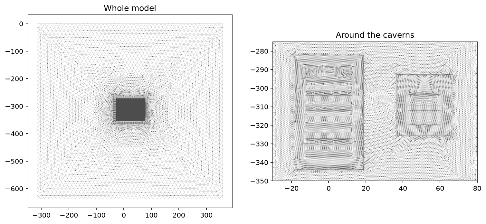

網格
網格分三層：節點座標、網格區塊、區塊之間的關係。Mesh 存全部節點的座標；MeshEntity 把元素分成一塊一塊（岩體區塊、邊界線、監測點…），每塊記錄它的元素用了哪些節點；MeshEntityInterconnectivity 記錄區塊之間的從屬關係。
Result 裡的一包位移，各屬於哪個節點、座標在哪裡？
這一類的表
Python 範例都接在 共用開頭 之後執行；下方「執行結果」是實際跑出來的輸出。
Mesh
整個模型的節點座標（406,281 個節點）
整個模型的節點座標表，只有一列。在 sqlite3 用 SELECT * FROM Mesh 看到的那串 x'cdcccccccccc1040…' 就是 NodeData：每 16 個十六進位字元（8 bytes）是一個 Double，依序是節點 1 的 x、節點 1 的 y、節點 2 的 x…
| 欄位 | 型別 | 意思 |
|---|---|---|
| IDPK | INTEGER | 只有 1 筆 |
| Dimension | INTEGER NOT NULL | 維度：2（x, y） |
| NodeCount | INTEGER NOT NULL | 節點總數：406,281 |
| I_ProjectIDFK | INTEGER NOT NULL | 所屬專案 → I_Project |
| NodeDataBLOB | BLOB NOT NULL | 全部節點座標：NodeCount × Dimension 個 Double，依序 x1, y1, x2, y2, … |
Python：還原節點座標
count, dim, data = con.execute('SELECT NodeCount, Dimension, NodeData FROM Mesh').fetchone()
xy = np.frombuffer(data, '<f8').reshape(count, dim)
print('節點數', count, '，陣列形狀', xy.shape, '，資料長度', len(data), 'bytes')
print('x 範圍', xy[:, 0].min(), '～', xy[:, 0].max(), ' m')
print('y 範圍', xy[:, 1].min(), '～', xy[:, 1].max(), ' m')
# 節點編號 n 的座標 = xy[n - 1]（編號從 1 開始）
for name, cd in con.execute("SELECT Name, ComponentData FROM MeshEntity WHERE Name IN ('UserPoint#001', 'UserPoint#003')"):
n = int(np.frombuffer(cd, '<u8')[0])
print(f'{name}：節點 {n}，座標 {xy[n - 1]}')節點數 406281 ，陣列形狀 (406281, 2) ，資料長度 6500496 bytes
x 範圍 -315.0 ～ 360.0 m
y 範圍 -637.8 ～ 0.0 m
UserPoint#001：節點 19322，座標 [-315. 0.]
UserPoint#003：節點 10099，座標 [ 0. -263.3]其他表裡的節點編號範圍是 1～406,281（實測：所有三角形用到的節點編號最小 1、最大 406,281，恰好等於節點數）。Python 陣列從 0 開始，所以要 xy[n - 1]。少減 1，座標就會錯到隔壁節點。
MeshEntity
網格區塊：岩體區塊、邊界線、監測點，以及各自的元素連接
網格被切成一塊一塊，每塊就是一個 MeshEntity。最重要的是 32 個岩體區塊（三角形、完整區塊），計算結果幾乎都掛在它們身上。每塊的 ComponentData 記錄它的元素用了哪些節點（連接表）。
| 欄位 | 型別 | 意思 |
|---|---|---|
| IDPK | INTEGER | 流水號；Result 的 MeshEntityID 指的就是它 |
| Name | TEXT NOT NULL | 名稱，例如 BoreholePolygon_…（岩體區塊）、BoundaryLine_…（邊界線）、UserPoint#…（監測點） |
| ComponentCount | INTEGER NOT NULL | 元件數：區塊有幾個元素，或節點群有幾個節點 |
| Hash | INTEGER NOT NULL | PLAXIS 內部的雜湊值，用來比對網格是否變過 |
| CreatorIDFK | INTEGER NOT NULL | 1 = Input（使用者建的）、3 = Mesher（網格產生器建的） → Creator |
| MeshIDFK | INTEGER NOT NULL | 所屬網格 → Mesh |
| MeshComponentTypeIDFK | INTEGER NOT NULL | 元件種類：1 節點、2 線、3 三角形 → MeshComponentType |
| MeshEntityApplicationIDFK | INTEGER NOT NULL | 用途：1 完整區塊、2 部分節點、4 輔助元素… → MeshEntityApplication |
| ParentMeshEntityIDFK | INTEGER | 本檔全部是 NULL；從屬關係改記在 MeshEntityInterconnectivity → MeshEntity |
| ComponentDataBLOB | BLOB NOT NULL | 元件內容（二進位）：通常是節點編號，見下表 |
有哪幾種區塊
SELECT c.Description AS 元件, a.Description AS 用途, COUNT(*) AS 區塊數,
SUM(m.ComponentCount) AS 元件總數, MIN(m.Name) AS 名稱例子
FROM MeshEntity m
JOIN MeshComponentType c ON c.ID = m.MeshComponentTypeID
JOIN MeshEntityApplication a ON a.ID = m.MeshEntityApplicationID
GROUP BY c.ID, a.ID ORDER BY c.ID, a.ID;| 元件 | 用途 | 區塊數 | 元件總數 | 名稱例子 |
|---|---|---|---|---|
| Node | FullElement | 156 | 716 | Fixity Nodes |
| Node | PartialNodal | 11 | 11 | CN_1 [Node 50] |
| Node | PartialElement | 11 | 11 | UserPoint#003_auxiliary_entity_1 |
| Line | FullElement | 359 | 5878 | BoundaryLine_1 |
| Line | PartialNodal | 40 | 40 | CN_1 [Node 50] |
| Line | PartialElement | 40 | 40 | BoundaryLine_113_auxiliary_entity_1 |
| Triangle | FullElement | 32 | 50738 | BoreholePolygon_1_1 |
| Triangle | PartialNodal | 63 | 63 | CN_1 [Node 50] |
| Triangle | PartialElement | 63 | 63 | BoreholePolygon_1_1_auxiliary_entity_1 |
ComponentData 怎麼解
| 區塊種類 | 每個元件幾 bytes | 內容 |
|---|---|---|
| 三角形・完整區塊（岩體） | 120 | 15 個 UInt64 節點編號（15 節點三角形）；前 3 個是角點，其餘是邊上與內部節點 |
| 線・完整區塊（邊界線） | 40 | 5 個 UInt64 節點編號（5 節點線元素，配合 15 節點三角形的邊） |
| 節點・完整區塊（監測點、固定節點） | 8 | 1 個 UInt64 節點編號 |
| 輔助元素（auxiliary entity） | 8 | 1 個 UInt64：母區塊裡第幾個元素（0 起算），母區塊見 MeshEntityInterconnectivity |
| 部分節點（CN_…，曲線點） | 16 | 2 個 UInt64，指向母區塊裡的位置；一般讀結果用不到 |
Python：讀一個岩體區塊的元素
conn = connectivity(336)
xy = node_xy()
print('區塊 336：', conn.shape[0], '個元素，每個元素', conn.shape[1], '個節點')
print('第 1 個元素的節點編號：', conn[0].tolist())
print('三個角點座標：')
print(xy[conn[0, :3] - 1])
# 線元素與輔助元素
cnt, cd = con.execute("SELECT ComponentCount, ComponentData FROM MeshEntity WHERE Name = 'BoundaryLine_145'").fetchone()
print('BoundaryLine_145 前兩個線元素：', np.frombuffer(cd, '<u8').reshape(cnt, -1)[:2].tolist())
for name, cd in con.execute('''SELECT Name, ComponentData FROM MeshEntity
WHERE MeshEntityApplicationID = 4 AND MeshComponentTypeID = 3 LIMIT 2'''):
print(name, '→ 母區塊裡的元素索引', np.frombuffer(cd, '<u8').tolist())區塊 336： 316 個元素，每個元素 15 個節點
第 1 個元素的節點編號： [232, 29, 30, 27359, 25553, 27362, 27360, 27358, 25552, 25554, 27361, 27363, 255271, 255272, 255273]
三個角點座標：
[[ -4.6996737 -293.8 ]
[ -4.2 -293.8 ]
[ -4.2 -293.28066726]]
BoundaryLine_145 前兩個線元素： [[3167, 18820, 193289, 193288, 193290], [18820, 18819, 193295, 193296, 193294]]
BoreholePolygon_1_Polygon_1_Polygon_2_Polygon_3_Polygon_5_1_auxiliary_entity_1 → 母區塊裡的元素索引 [372]
BoreholePolygon_1_Polygon_1_Polygon_2_Polygon_3_Polygon_5_1_auxiliary_entity_2 → 母區塊裡的元素索引 [373]Python：把網格畫出來
import matplotlib
matplotlib.use('Agg')
import matplotlib.pyplot as plt
xy = node_xy()
ents = [e for (e,) in con.execute('SELECT ID FROM MeshEntity WHERE MeshComponentTypeID = 3 AND MeshEntityApplicationID = 1')]
fig, axes = plt.subplots(1, 2, figsize=(12, 5.2))
for ax in axes:
for e in ents:
tri = connectivity(e)[:, :3] - 1 # 取 3 個角點，換成 0 起算
ax.triplot(xy[:, 0], xy[:, 1], tri, lw=0.12, color='0.3')
ax.set_aspect('equal')
axes[1].set_xlim(-30, 80); axes[1].set_ylim(-350, -275)
axes[0].set_title('Whole model'); axes[1].set_title('Around the caverns')
fig.savefig('mesh.png', dpi=150, bbox_inches='tight')
print('畫了', len(ents), '個岩體區塊、', sum(len(connectivity(e)) for e in ents), '個元素')畫了 32 個岩體區塊、 50738 個元素
MeshEntityInterconnectivity
網格區塊之間的關係：誰是誰的面、誰是誰的一部分
記錄網格區塊之間的關係，例如「這條邊界線是那個岩體區塊的外側面」「這個輔助元素是那個區塊的一部分」。欄位名雖然叫 InterconnectivityID，存的其實是 MeshEntity 的 ID。
| 欄位 | 型別 | 意思 |
|---|---|---|
| IDPK | INTEGER | 流水號 |
| SourceInterconnectivityIDFK | INTEGER | 來源區塊 → MeshEntity |
| TargetInterconnectivityIDFK | INTEGER | 目標區塊 → MeshEntity |
| InterconnectivityTypeIDFK | INTEGER NOT NULL | 關係種類；讀法是「來源 是 目標 的 …」 → InterconnectivityType |
有哪些關係
SELECT t.Description AS 關係, COUNT(*) AS 筆數,
(SELECT s.Name || ' → ' || g.Name
FROM MeshEntityInterconnectivity y
JOIN MeshEntity s ON s.ID = y.SourceInterconnectivityID
JOIN MeshEntity g ON g.ID = y.TargetInterconnectivityID
WHERE y.InterconnectivityTypeID = t.ID LIMIT 1) AS 例子_來源到目標
FROM MeshEntityInterconnectivity x
JOIN InterconnectivityType t ON t.ID = x.InterconnectivityTypeID
GROUP BY t.ID ORDER BY 2 DESC;| 關係 | 筆數 | 例子_來源到目標 |
|---|---|---|
| External Face Of | 354 | BoundaryLine_2 → BoreholePolygon_1_Polygon_1_1 |
| External Volume Of | 354 | BoreholePolygon_1_Polygon_1_Polygon_2_Polygon_3_Polygon_5_1 → inverted_face_161 |
| Is Part Of | 228 | BoreholePolygon_1_Polygon_1_Polygon_2_Polygon_3_Polygon_5_1_auxiliary_entity_1 → BoreholePolygon_1_Polygon_1_Polygon_2_Polygon_3_Polygon_5_1 |
| Inward Face Of | 179 | BoundaryLine_1 → BoreholePolygon_1_1 |
| Inverted Face Of | 179 | inverted_face_161 → BoundaryLine_6 |
| Outward Face Of | 175 | BoundaryLine_2 → BoreholePolygon_1_Polygon_1_1 |
| Slave Of | 103 | CN_1 [Node 50] → CN_1 [Node 50] |
| Internal Point Of | 1 | UserPoint#155 → BoreholePolygon_1_Polygon_1_Polygon_2_1 |
Python：從曲線點的輔助元素找回母區塊與座標
中間計算步只存輔助元素的結果（見 Result）。要知道那個元素在哪裡，就靠「Is Part Of」（ID 10）找母區塊，再用元素索引取節點：
# 找出有最多計算步結果的輔助元素（三角形）
def n_steps(e):
return con.execute('''SELECT COUNT(*) FROM Result r JOIN Variables v ON v.ID = r.VariablesID
WHERE r.MeshEntityID = ? AND v.Name = 'Displacement' ''', (e,)).fetchone()[0]
aux = [e for (e,) in con.execute('SELECT ID FROM MeshEntity WHERE MeshEntityApplicationID = 4 AND MeshComponentTypeID = 3')]
aux_id = max(aux, key=n_steps)
aux_name, cd = con.execute('SELECT Name, ComponentData FROM MeshEntity WHERE ID = ?', (aux_id,)).fetchone()
parent = con.execute('''SELECT TargetInterconnectivityID FROM MeshEntityInterconnectivity
WHERE SourceInterconnectivityID = ? AND InterconnectivityTypeID = 10''', (aux_id,)).fetchone()[0]
k = int(np.frombuffer(cd, '<u8')[0]) # 母區塊裡第 k 個元素（0 起算）
nodes = connectivity(parent)[k]
print(aux_name)
print('→ 母區塊', parent, '的第', k, '個元素，角點座標', node_xy()[nodes[:3] - 1].round(2).tolist())
# 這個輔助元素在每一步都有位移 → 可畫成荷載-位移曲線（MeshEntityID 有索引，查詢很快）
steps = con.execute('''SELECT r.K_StepsID, p.Number, k.Number FROM Result r
JOIN Variables v ON v.ID = r.VariablesID
JOIN K_Steps k ON k.ID = r.K_StepsID
JOIN I_Phase p ON p.ID = k.I_PhaseID
WHERE r.MeshEntityID = ? AND v.Name = 'Displacement' ORDER BY r.K_StepsID''', (aux_id,)).fetchall()
print('有位移結果的計算步：', len(steps), '步（階段', sorted({ph for _, ph, _ in steps}), '）')
for sid, ph, kn in steps[:3] + steps[-2:]:
u = get_result(sid, aux_id, 'Displacement', UNIQUE_NODAL)
print(f' 階段 {ph} 第 {kn:2d} 步：第 1 個節點 uy = {u[0, 1] * 1000:8.3f} mm')BoreholePolygon_1_1_auxiliary_entity_1
→ 母區塊 360 的第 8166 個元素，角點座標 [[1.65, -260.94], [-1.41, -261.09], [0.0, -263.3]]
有位移結果的計算步： 3836 步（階段 [1, 2, 3, 4, 5, 6, 7, 8, 9, 10, 11, 12, 13, 14, 15, 16, 17] ）
階段 1 第 1 步：第 1 個節點 uy = -0.069 mm
階段 1 第 2 步：第 1 個節點 uy = -0.138 mm
階段 1 第 3 步：第 1 個節點 uy = -0.207 mm
階段 17 第 382 步：第 1 個節點 uy = -26.233 mm
階段 17 第 383 步：第 1 個節點 uy = -26.239 mm